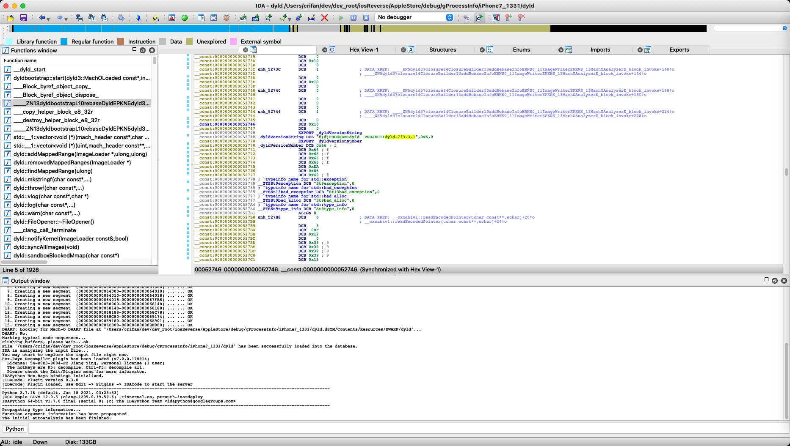

dyld版本
iPhone中dyld的版本
- iPhone中dyld的版本
- 概述
- 导出
iPhone中/usr/lib/dyld，然后用工具（IDA、rabin2、jtool2等）分析出_dyldVersionString（和_dyldVersionNumber）中的版本号（字符串）
- 导出
- 概述
举例1
iPhone11
iPhone11中的dyld：
- /usr/lib/dyld
想要知道：dyld的版本号
最后是：
（1）先是：根据源码
https://opensource.apple.com/source/dyld/dyld-433.5/include/mach-o/dyld_images.h
知道了其中有个：
dyldVersion，其中会指向C字符串，其中包含：dyld-127.3这种值，其中就表示版本是：127.3
（2）去导出此处dyld二进制后，用工具（rabin2、jtool2等）查看到symbol中，包含dyldVersion字样的有：
1883 0x0004ddb8 0x0004ddb8 LOCAL FUNC 0 _dyldVersionString
1884 0x0004dde0 0x0004dde0 LOCAL FUNC 0 _dyldVersionNumber
（3）去通过IDA分析二进制，而查看到：
_dyldVersionString- 地址：
000000000004DDB8 - 值=字符串：
@(#)PROGRAM:dyld PROJECT:dyld-932.4
- 地址：
-》即可从：
dyld-932.4
找到最终要的值：
dyld的版本号：932.4
iPhone7
导出iPhone7中的：
iPhone7-1331:~ root# ls /usr/lib/dyld
/usr/lib/dyld*
iPhone7-1331:~ root# ls -lh /usr/lib/dyld
-rwxr-xr-x 1 root wheel 650K Apr 14 2018 /usr/lib/dyld*
到Mac中：
crifan@licrifandeMacBook-Pro ~/dev/dev_root/iosReverse/AppleStore/debug/gProcessInfo/iPhone7_1331 scp root@192.168.2.6:/usr/lib/dyld dyld
dyld 100% 650KB 6.5MB/s 00:00
crifan@licrifandeMacBook-Pro ~/dev/dev_root/iosReverse/AppleStore/debug/gProcessInfo/iPhone7_1331 ll
total 1304
-rwxr-xr-x 1 crifan staff 650K 1 13 22:58 dyld
去导出symbol：
crifan@licrifandeMacBook-Pro ~/dev/dev_root/iosReverse/AppleStore/debug/gProcessInfo/iPhone7_1331 rabin2 -s dyld > dyld_rabin2_s_symbols.txt
Stack exhaustion prevented
Stack exhaustion prevented
Stack exhaustion prevented
Stack exhaustion prevented
Stack exhaustion prevented
Stack exhaustion prevented
crifan@licrifandeMacBook-Pro ~/dev/dev_root/iosReverse/AppleStore/debug/gProcessInfo/iPhone7_1331 jtool2 -S dyld > dyld_jtool2_S_symbol.txt
crifan@licrifandeMacBook-Pro ~/dev/dev_root/iosReverse/AppleStore/debug/gProcessInfo/iPhone7_1331 ll
total 2512
-rwxr-xr-x 1 crifan staff 650K 1 13 22:58 dyld
-rw-r--r-- 1 crifan staff 186K 1 13 22:59 dyld_jtool2_S_symbol.txt
-rw-r--r-- 1 crifan staff 412K 1 13 22:59 dyld_rabin2_s_symbols.txt
然后再去：搜dyldVersion
/Users/crifan/dev/dev_root/iosReverse/AppleStore/debug/gProcessInfo/iPhone7_1331/dyld_rabin2_s_symbols.txt
[Symbols]
nth paddr vaddr bind type size lib name
――――――――――――――――――――――――――――――――――――――――――――――――――――
0 0x0000e788 0x0000e788 GLOBAL FUNC 0 __dyld_debugger_notification
1 0x00052770 0x00052770 GLOBAL FUNC 0 _dyldVersionNumber
2 0x00052748 0x00052748 GLOBAL FUNC 0 _dyldVersionString
3 0x00068000 0x00068000 GLOBAL FUNC 0 _dyld_all_image_infos
4 0x00069180 0x00069180 GLOBAL FUNC 0 _error_string
5 0x00001000 0x00001000 LOCAL FUNC 0 __dyld_start
...
->
_dyldVersionNumber:0x00052770_dyldVersionString:0x00052748
再去用IDA查看版本号：
0x00052748

__const:0000000000052748 EXPORT _dyldVersionString
__const:0000000000052748 _dyldVersionString DCB "@(#)PROGRAM:dyld PROJECT:dyld-733.3.1",0xA,0
__const:0000000000052770 EXPORT _dyldVersionNumber
__const:0000000000052770 _dyldVersionNumber DCB 0x66 ; f
__const:0000000000052771 DCB 0x66 ; f
__const:0000000000052772 DCB 0x66 ; f
__const:0000000000052773 DCB 0x66 ; f
__const:0000000000052774 DCB 0x66 ; f
__const:0000000000052775 DCB 0xEA
__const:0000000000052776 DCB 0x86
__const:0000000000052777 DCB 0x40 ; @
__const:0000000000052778 ; `typeinfo name for'std::exception
__const:0000000000052778 __ZTSSt9exception DCB "St9exception",0
->
_dyldVersionString@(#)PROGRAM:dyld PROJECT:dyld-733.3.1
-> dyld-733.3.1
- dyld版本号：
733.3.1
或许相关
当前（Mac或iPhone中）的dyld的版本
-> 或许是：dyld，就是ld？
-> 如果是，则
ld -v可以查看版本：
举例：
➜ ~ ld -v
@(#)PROGRAM:ld PROJECT:ld64-711
BUILD 18:11:15 Aug 3 2021
configured to support archs: armv6 armv7 armv7s arm64 arm64e arm64_32 i386 x86_64 x86_64h armv6m armv7k armv7m armv7em
LTO support using: LLVM version 13.0.0, (clang-1300.0.29.3) (static support for 27, runtime is 27)
TAPI support using: Apple TAPI version 13.0.0 (tapi-1300.0.6.5)
其中，ld64-711中的711，好像就是：dyld的版本